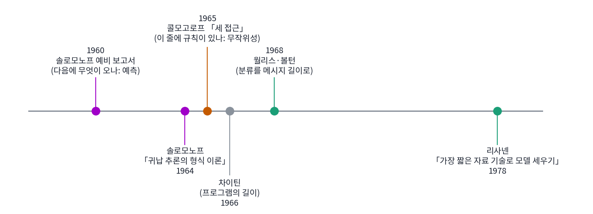
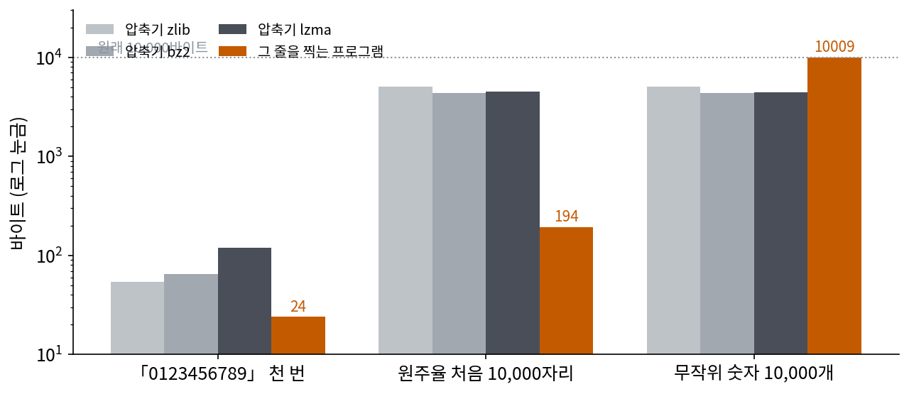
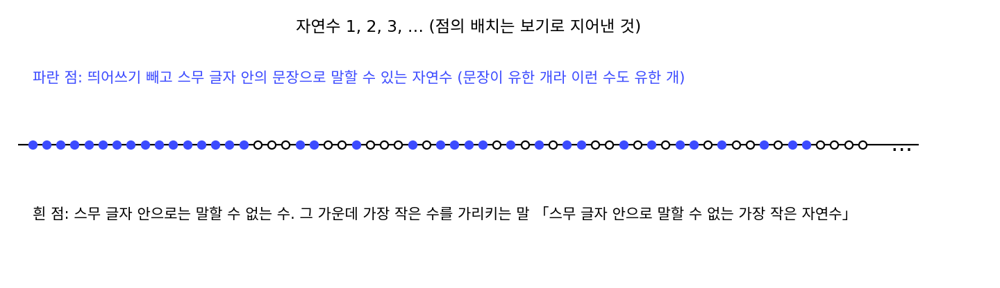
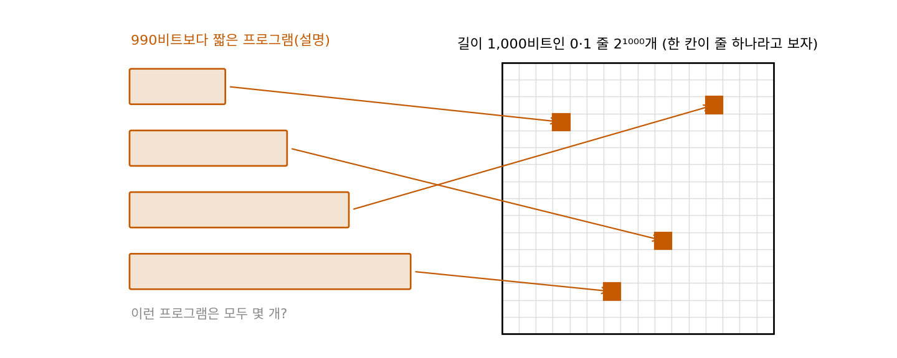
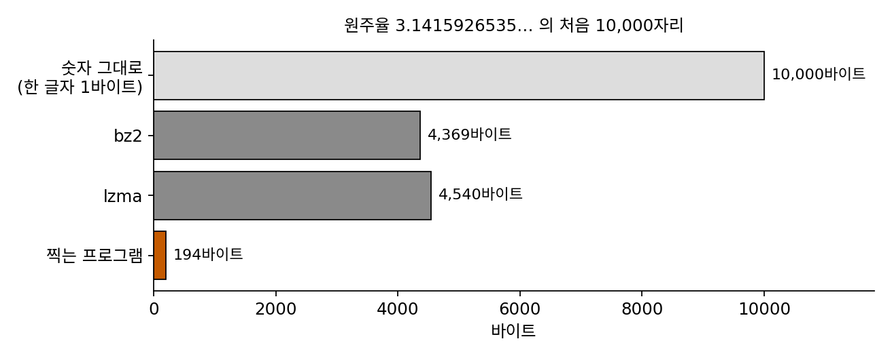

콜모고로프 복잡도: 가장 짧은 프로그램의 길이
두 부분 코드의 길이 144.8비트에는 이 책이 고른 것이 여럿 들어 있다. 모델을 다항식으로 정했고, 계수를 엘리아스 감마 코드로 적었고, 차를 정규분포로 적었다. 사인 곡선이나 지수 함수를 모델로 썼다면, 계수를 다른 코드로 적었다면 숫자도 순위도 달라졌을 것이다. 그렇다면 내가 고른 것에 기대지 않는 「이 자료를 적는 가장 짧은 길이」가 따로 있을까? 있다면 그것이 자료에 담긴 규칙의 양일 것이다.
역사: 무작위성에서 출발한 콜모고로프
확률론을 공리 위에 세운 모스크바의 수학자 콜모고로프(Andrey Kolmogorov)는 1965년 새로 창간된 학술지 『정보 전달의 문제(Problemy Peredachi Informatsii)』 1권 1호에 「정보의 양을 정의하는 세 가지 접근」을 실었다. 경우의 수를 세는 접근, 확률을 쓰는 접근에 이어 셋째로 알고리즘의 접근을 내놓았다. 어떤 대상을 만들어 내는 가장 짧은 프로그램의 길이로 그 대상에 든 정보를 재자는 것이다. 확률을 쓰는 섀넌의 정보는 분포를 두고 평균을 말할 뿐, 수열 하나에 든 정보를 말하지 못했다.
그가 붙든 물음의 하나는 무작위성이었다. 1968년 영어로 낸 논문에서 그는 상식으로는 주기가 없는 것이 무작위의 표시이고, 통계학의 「난수표」도 그런 생각으로 만들어진다고 적었다. 짧은 프로그램으로 만들어 낼 수 있는 수열은 규칙이 있는 것이고, 어떤 프로그램도 수열 자체보다 많이 짧지 않으면 그 수열은 무작위다. 같은 논문에서 그는 이 생각을 처음 지면에 낸 것은 솔로모노프의 논문이었고, 자신은 1963~1964년에 솔로모노프의 일을 모른 채 비슷한 결론에 닿았다고 밝혔다. 차이틴(Gregory Chaitin)도 1966년 『ACM 저널』에 프로그램의 길이를 다룬 논문을 냈다.


무작위인지 아닌지는 지금이면 압축기에 넣어 보면 되잖아요. 안 줄어들면 무작위고요.

gzip이 나온 게 1992년이에요. 1960년대에 무작위 숫자가 필요한 사람은 무엇을 썼을까요?

음… 콜모고로프가 말한 난수표요? 숫자를 미리 뽑아서 책으로 찍어 둔 거요.

그래요. 랜드 연구소가 1955년에 낸 『백만 개의 무작위 숫자(A Million Random Digits with 100,000 Normal Deviates)』가 그런 책이에요. 책에 찍힌 숫자가 무작위인지는 숫자마다 나온 횟수가 고른지 같은 통계 검정으로 확인했고요.

그런데 횟수가 고른 건 「0123456789」를 천 번 되풀이한 줄도 마찬가지잖아요. 그건 누가 봐도 무작위가 아닌데요.
검정을 하나 더 붙이면 그 줄은 걸러지겠죠. 그다음 줄을 거르려면 또 하나를 붙여야 하고요. 검정 목록을 늘리는 대신, 줄 하나가 무작위라는 말을 한 번에 정할 방법이 필요했어요.

아, 그래서 「그 줄보다 많이 짧은 프로그램이 하나도 없으면 무작위」라고 한 거군요. 검정 몇 개가 아니라 프로그램 전부를 상대로요.

그럼 되풀이한 줄, 원주율, 무작위 숫자를 압축기와 짧은 프로그램으로 각각 줄여 보면, 어느 줄에 짧은 프로그램이 있는지 압축기도 알아볼까요?
숫자 만 개짜리 세 줄
숫자 10,000개로 된 줄 세 개를 보자(계산은 sources/mdl/s3_kolmogorov.py).
- (가) 「0123456789」를 천 번 되풀이한 줄
- (나) 원주율 π의 처음 10,000자리 3141592653…
- (다) 컴퓨터로 숫자를 무작위로 뽑은 줄(씨앗 1)
(나)와 (다)는 눈으로 가를 수 없다. 숫자마다 나온 횟수도 (나)는 947~1,046번, (다)는 978~1,027번으로 둘 다 고르다. 세 줄을 파이썬 표준 압축기 셋으로 줄여 보았다.
| 줄 | 원래 | zlib (gzip 방식) | bz2 | lzma (xz) | 그 줄을 찍는 파이썬 프로그램 |
|---|---|---|---|---|---|
| (가) 되풀이 | 10,000바이트 | 54 | 65 | 120 | 24바이트 |
| (나) 원주율 | 10,000바이트 | 5,090 | 4,369 | 4,540 | 194바이트 |
| (다) 무작위 | 10,000바이트 | 5,093 | 4,390 | 4,472 | 10,009바이트 |
압축기는 (가)를 50바이트 남짓으로 줄였지만, (나)와 (다)는 둘 다 4,400바이트 안팎에서 멈추었다. 숫자 하나를 고르게 적으면 log₂ 10 = 3.32비트, 10,000자리면 4,152바이트이므로 압축기는 (나)와 (다)에서 규칙을 하나도 찾지 못했다. 그런데 오른쪽 칸을 보면 (나)는 194바이트짜리 프로그램이 찍어 낸다. 원주율의 자릿수를 차례로 내는 기번스의 알고리즘을 여섯 줄로 줄여 쓴 것이고, 줄을 10만 자리로 늘려도 숫자 하나가 늘어 195바이트가 될 뿐이다. (다)를 찍는 프로그램으로 우리가 아는 가장 짧은 것은 숫자를 그대로 담은 print('4579…')다.

어떤 줄 x를 찍고 멈추는 프로그램 가운데 가장 짧은 것의 길이를 x의 콜모고로프 복잡도 (가장 짧은 프로그램의 길이 / Kolmogorov complexity)라 한다.
여기서 만능 컴퓨터 U는 파이썬이든 C든 어떤 계산이든 흉내 낼 수 있는 기계 하나를 정해 둔 것이다. 언어를 바꾸면 K(x)도 바뀌지만, 한 언어의 해석기를 다른 언어로 짠 프로그램을 앞에 붙이면 되므로 두 언어의 복잡도 차이는 x와 상관없는 상수 하나를 넘지 않는다. 줄이 길어질수록 그 상수는 작아 보인다. 두 부분 코드에서 다항식과 감마 코드를 고른 일이 프로그램 언어 하나를 고른 일로 줄어든 것이다.
위 표의 압축기와 프로그램은 모두 K(x)의 위쪽 경계를 주어서, 이를테면 (나)의 복잡도는 194바이트보다 크지 않다. 그러나 「이보다 짧은 프로그램은 없다」는 아래쪽 경계는 어떻게 얻을까? 길이 0부터 차례로 모든 프로그램을 돌려 보면 될 것 같지만, 어떤 프로그램은 끝없이 돌고, 끝날지 안 끝날지를 미리 가르는 일반적인 방법은 없다. 더 직접적으로, K를 계산하는 프로그램이 있다고 해 보자. 그 프로그램을 써서 「복잡도가 백만 비트를 넘는 줄 가운데 처음 것을 찍어라」라는 프로그램을 짤 수 있다. 이 프로그램의 길이는 K를 계산하는 부분에 숫자 백만을 적는 20비트 남짓을 더한 것이라 백만 비트보다 훨씬 짧다. 그런데 이 짧은 프로그램이 복잡도가 백만 비트를 넘는 줄을 찍었으니 모순이고, 따라서 K를 계산하는 프로그램은 없다. 콜모고로프 복잡도는 잘 정의되지만 잴 수 없다.
ML에서: 압축기로 잰 비슷함
잴 수 없는 양이라도 위쪽 경계로 근사해 쓸 수는 있다. 실리브라시(Rudi Cilibrasi)와 비탄니(Paul Vitányi)는 2005년 「압축으로 묶기(Clustering by Compression)」에서, 두 파일을 따로 압축한 크기와 붙여서 압축한 크기를 비교해 두 파일이 얼마나 비슷한지 재는 「정규화 압축 거리」를 내놓았다. 붙여서 줄인 크기가 따로 줄인 크기의 합보다 많이 작으면, 한 파일의 규칙이 다른 파일을 적는 데 쓰였다는 뜻이다. 콜모고로프 복잡도로 정의한 이상적인 거리를 실제 압축기로 근사한 것이다. 2023년 장즈잉(Zhiying Jiang) 외는 이 거리에 gzip과 가장 가까운 이웃 분류를 붙여, 신경망을 프리트레인하지 않고 글을 분류하는 방법이 신경망과 겨룰 만하다고 보고했다. 발표 뒤 다른 연구자들은 가장 가까운 이웃 둘의 동점을 처리하는 방식 때문에 정확도가 부풀려졌다고 지적했고, 공정하게 다시 재면 점수가 내려갔다. 압축기는 자기가 찾을 수 있는 규칙만 찾는다는 위의 원주율 표와 같은 한계도 함께 안고 있다.
문제 7. 스무 글자 안으로 말할 수 없는 수
「스무 글자 안으로 말할 수 없는 가장 작은 자연수」라는 말을 생각하자(띄어쓰기는 세지 않는다). (가) 이 말은 몇 글자인가? (나) 이 말이 가리키는 수가 있다면 무엇이 이상한가? (다) 「열두 글자 안으로 말할 수 없는 가장 작은 자연수」는 어떤가?

세어 보니까 19글자예요. 그런데 이상한 게 뭐죠? 그냥 아주 큰 수일 것 같은데요.
「스무 글자 안으로 말할 수 없는 가장 작은 자연수」를 방금 몇 글자로 말했죠?
19글자로요. 스무 글자 안으로 말할 수 없다던 수를 19글자로 말해 버렸어요. 그럼 그런 수가 없는 건가요? 그런데 스무 글자 안으로 말할 수 있는 문장은 유한하니까, 말할 수 없는 수는 분명히 있어요.
(다)는 문장이 19글자라 열두 글자를 넘으니까 모순이 안 생겨. 문장이 자기가 말하는 한계보다 짧을 때만 이상해지는 거야.

그래요. 「말한다」의 뜻이 흐릿해서 생기는 역설이에요. 「말한다」를 「수를 찍고 멈추는 프로그램을 쓴다」로 바꾸면 흐릿함이 사라지는 대신, 본문에서 본 대로 「복잡도를 계산하는 프로그램은 없다」는 결론이 나와요.

집합론 시간에 「자기 자신을 원소로 갖지 않는 집합들의 집합」으로 모순을 만들던 게 생각나요. 자기를 가리키게 하면 모순이 나오는 꼴이 같아요.
문제 8. 압축되지 않는 줄은 얼마나 많은가
길이 1,000비트인 0·1 줄은 2^1000개다. (가) 990비트보다 짧은 프로그램(설명)은 많아야 몇 개인가? 그것으로 1,000비트 줄 가운데 몇 분의 일까지 설명할 수 있는가? (나) 어떤 압축기도 모든 줄을 1비트라도 줄일 수는 없음을 보여라.

gzip으로 아무 파일이나 다 줄어들던데요. 1비트쯤은 늘 줄일 수 있을 것 같아요.
990비트보다 짧은 0·1 줄은 몇 개죠?
길이 0인 것 1개, 길이 1인 것 2개, …, 길이 989인 것 2^989개야. 다 더하면 2^990 − 1개.
프로그램 하나는 줄을 몇 개까지 찍을 수 있죠?
하나만요. 그럼 1,000비트 줄 2^1000개 가운데 많아야 2^990 − 1개만 10비트 넘게 줄일 수 있어요. 2^(−10), 1,024분의 1이 안 돼요.
(나)도 (가)처럼 짧은 설명의 개수를 세면 되네요. 999비트 아래 설명은 2^999 − 1개뿐이니까, 1,000비트 줄의 절반 넘게는 1비트도 못 줄여요. 늘 줄일 수 있다고 한 건 틀렸네요. 제가 gzip으로 줄인 파일들은 글이나 표처럼 원래 규칙이 있던 거였어요. 이미 압축된 zip 파일을 또 압축하면 오히려 커졌던 게 그래서였고요.

그래요. 거의 모든 줄은 압축되지 않아요. 압축이 된다는 것 자체가 그 자료가 아주 드문 부류, 규칙 있는 부류에 든다는 증거예요.
문제 9. 압축기는 원주율을 알아보지 못한다
원주율 10,000자리를 bz2는 4,369바이트, lzma는 4,540바이트로 줄였고, 이 줄을 찍는 프로그램은 194바이트다. (가) 각각 숫자 하나에 몇 비트인가? 숫자를 고르게 적은 log₂ 10 비트와 비교하라. (나) 언어 모델이 어떤 글을 바이트당 0.8비트로 줄였다면, 그 글의 복잡도에 대해 무엇을 말할 수 있고 무엇을 말할 수 없는가?

원주율은 무리수라 숫자가 되풀이되지 않잖아요. 규칙이 없으니까 압축기도 고르게 적는 것보다 못 줄일 거예요.
계산해 볼게. bz2는 4,369 × 8 ÷ 10,000 = 3.495비트, lzma는 3.632비트야. 고르게 적으면 log₂ 10 = 3.322비트니까 둘 다 그보다도 길어.
그럼 원주율 10,000자리를 찍는 194바이트 프로그램은 숫자 하나에 몇 비트일까요?
194 × 8 ÷ 10,000 = 0.155비트요.

0.155비트… 그럼 규칙은 있었네요. 되풀이되는 무늬가 없을 뿐이지, 원주율을 계산하는 짧은 규칙이 있어요. 압축기가 못 줄인 걸 보고 규칙이 없다고 했어요.
압축기가 고르게 적는 3.322비트보다도 길게 적은 건 왜일까요?
압축기는 글자가 숫자 열 가지뿐이라는 걸 모르고 바이트 256가지를 다 대비하니까 군더더기가 붙었어요. 그걸 빼도 3.322비트 아래로는 못 갔으니, 압축기가 찾은 규칙은 하나도 없었던 거고요.

그럼 (나)는요. 0.8비트는 그 언어 모델이 찾은 규칙만큼의 위쪽 경계예요. 진짜 복잡도는 그보다 작을 수도 있어요. 더 좋은 모델이 나오면 더 줄겠죠.
반대 방향은요? 「이 글은 0.8비트보다는 짧게 못 줄인다」고 말할 수 있나요?
그건 못 해요. 아래쪽 경계를 주는 방법이 없으니까요. 원주율처럼 엄청 짧은 규칙이 숨어 있을 수도 있어요.
잃어버린 열쇠를 서랍 세 곳만 뒤져 보고 「집에 없다」고 할 수는 없는 거랑 같네요. 뒤진 곳에 없다는 것만 말할 수 있어요.